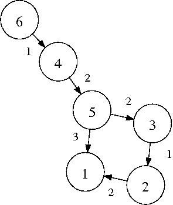

Spanning tree and spanning forest
Table of Contents
Introduction
The source files in spanntree.tar.gz contains several routines that compute the maximum and minimum spanning tree for ordered or unordered graphs. They can be used both for connected graphs or for graphs characterized by several disjoint parts. The routines are implemented as C function, which can be easily linked to any application. A simple program is provided which computer minimum and maximum spanning tree for a graph provided at the command line.
Weighted graph and spanning tree
A weighted graph can essentially be of two types: directed and undirected.

Figure 1: Weighted directed graph
A directed graph can be seen as a collection of vertexes and of links connecting them, called edges. Links have a source vertex and a destination vertex, and are associated a weight. For instance in the figure the edge connecting vertex 5 and 3 is associated a weight of 2. A graph can be formally represented in essentially two ways: a list of edges, reporting for each edge the origin and destination vertexes together with the weight, or an andjacency matrix, in which each row and each column represent a different vertex and the associated entry is the wight of the edge linking the two. For the graph in the picture, the first representation would be
2 1 2 3 2 1 4 5 2 5 3 2 5 1 3 6 4 1
while the second is
0 0 0 0 0 0 2 0 0 0 0 0 0 1 0 0 0 0 0 0 0 0 0 5 3 0 2 0 0 0 0 0 0 1 0 0
This representation adopts the convention that an entry of zero, i.e. a zero wright, represent a missing link.
In an undirected graph, the "direction" of the edges is not relevant. So if vertex 1 is connected to vertex 2, the latter is automatically connected to the first. A weight is again assigned to each edge. It is immediate to see that a undirected graph can be seen as a special case of a directed graph. The list of edges will contain couples of edges, with the same weights, where origin and destination vertexes are swapped, while the matrix representation will be a symmetric matrix.
Spanning tree
Given a graph, a subset of its edges represent a subgraph. Essentially is a new graph obtained removing some of the original links.
A spanning tree is a subgraph of the original graph, which connect all the vertexes that where originally connected. This means that removing an edge form a spanning tree, at least a couple of vertexes that were originally connected get disconnected. The definition of spanning tree does not only apply to fully connected graph. When applied to disconnected graph it often takes the name of spanning forest.
The above definitions do not use the weight associated to the edges. The weights are however relevant for the definition of a maximum spanning tree (MST). A spanning tree is a MST if the sum of the weights of its vertexes is not lower than the sum of the weights of the vertexes of any other spanning tree.
Analogously a minimum spanning tree (mst) is a spanning tree such that the sum of the weights of its edges is not greater than the sum of the edges of any other spanning tree.
Notice that these definition do not imply that the MST or the mst is unique.
Finding minimum and maximum spanning tree
The efficient algorithm for the identification of a minimum or maximum spanning tree makes use of the so called disjoint set data structure. The algorithm that makes use of this set is called an union find algorithm. Essentially it incrementally builds sets of related objects.
The implementation in C is contained in unionfind.h and unionfind.c. It is a modified version of the code available from literateprograms.org. The modifications reflect the pseudo-code discussed here.
The actual code which perform the the MST and mst is contained in graph.c. It is based on the Kruskal's algorithm. The basic functions are
void Mst(size_t V, Edge *edges, size_t E, Edge **tree, size_t *T)
and
void mst(size_t V, Edge *edges, size_t E, Edge **tree, size_t *T)
which computes a Maximum and minimum spanning tree (or forest, in case
of disjoint graph), respectively. The first three arguments of the
function define the initial graph: V is the number of vertexes,
edges is an array of Edges which define the graph and E is its
length. The function store the spanning tree in the array (*) tree
and its length in T. Notice that if the original graph is made of P
disjoint parts, it is T=V-P. If the graph is connected, then P=1 and
T=V-1.
Example
As an example of the use of the routines in graph consider a simple programs which reads a graph as a list of edges from the standard input and return the minimum and maximum spanning tree
int main(){
size_t i;
/* initial graph */
size_t N; /* number of nodes */
size_t E; /* number of edges */
Edge * graph=NULL; /* original graph */
size_t orig,dest;
double weight;
/* spanning forest */
Edge * tree=NULL; /* spanning forest */
size_t T; /* edges in the spanning forest */
double wt; /* total weight of the spanning forest */
/* load the graph */
E=0;
N=0;
while(scanf("%zd %zd %lf",&orig,&dest,&weight) != EOF){
E++;
if(orig>N) N=orig;
if(dest>N) N=dest;
graph = (Edge *) realloc(graph,E*sizeof(Edge));
graph[E-1].orig = orig;
graph[E-1].dest = dest;
graph[E-1].weight = weight;
}
/* compute the minimum spanning tree */
mst(N,graph,E,&tree,&T);
/* output the result */
printf("#minimum spanning tree\n");
wt=0;
for(i=0;i<T;i++){
printf("%zd %zd %f\n",tree[i].orig,tree[i].dest,tree[i].weight);
wt += tree[i].weight;
}
printf("#total weight = %f\n",wt);
/* compute the maximum spanning tree */
Mst(N,graph,E,&tree,&T);
/* output the result */
printf("#maximum spanning tree\n");
wt=0;
for(i=0;i<T;i++){
printf("%zd %zd %f\n",tree[i].orig,tree[i].dest,tree[i].weight);
wt += tree[i].weight;
}
printf("#total wight = %f\n",wt);
return 0;
}
The number of vertexes is obtained from the list of provided edges. Download the example spanntree.c and compile it using
gcc spanntree.c graph.c union_find.c -o spanntree
then run it on whatever graph you want.